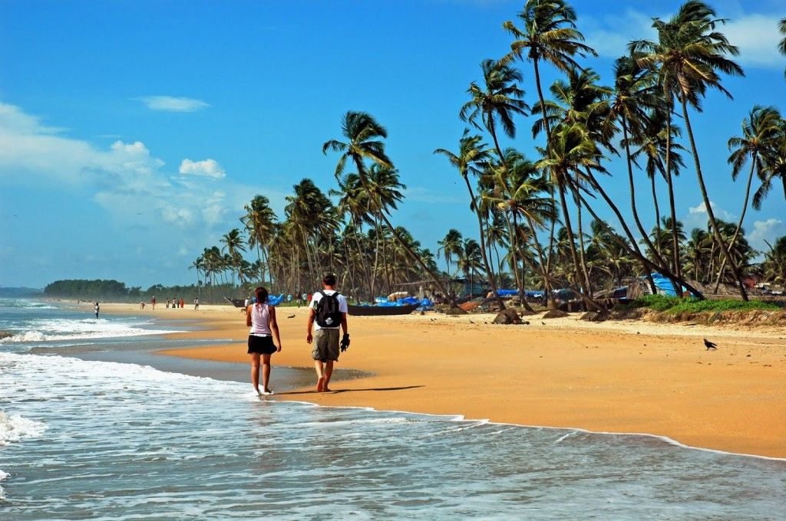

-

- 
-


Goa, with its sunny beaches, seafood, nightlife, parties, flea markets, majestic forts, and age-old churches exudes an enticing vibe that is hard to resist. It is the ultimate travel destination where you can indulge in a wide range of activities on land as well as in water. Unsurprisingly, it can get a bit overwhelming to decide what to do and what to visit but i think this list might help.
Read More...
Think clear turquoise waters, unspoilt beaches, stunning rainforests, gorgeous corals, ancient tribes – where in India can you find all this and more? Why, on the Andaman and Nicobar Islands, of course! A tropical paradise in the truest sense of the term, the archipelago of islands is located about 1,000 kilometres off the eastern coast of India in the Bay of Bengal. With a rich flora and fauna cover, Andaman and Nicobar Island is sure to blow your mind away with its serenity.
Read More...
Kovalam is an internationally acclaimed beach destination in Kerala and one of the most hot tourist spots in India. This beautiful place fascinates travelers with its three crescent beaches. Located by the Arabian Sea, this marvelous spot is also known for its large rows of coconut trees. Beside its panoramic natural beauty, Kovalam offers plenty of leisure options to travelers. It is a favorite beach destination for many foreigners where they love to enjoy swimming, sunbathing and other water activities.
Read More...Are you looking for quiet beach spots and that too in India? Welcome to India’s smallest Union Territory Lakshadweep! Its shinning bright green waters draw many travelers across the world. It is pretty popular beach and hot spot in India. It is well known for white sand beaches, sapphire lagoons, colorful corals and omnipresent silence. If you are looking for a peaceful and chaos free vacation, than this is the place for you. It is a dazzling archipelago of land masses where you can take pleasure in water sports and discover sea life.
Read More...
Known as the ‘Jewel of the East Coast’, Visakhapatnam (or ‘Vizag’) is a tourist’s paradise. Enveloped by towering hills on one side and scenic beaches on the other, this little-known destination is home to a diverse set of attractions that promise visitors one dazzling holiday.
Read More...Pondicherry is a beautiful place and it’s considered as French capital of the nation. This place offers sanctity and serenity in its actual sense. This city is popular for its urban structural design, calmness, depicting French style, and allure people around the world to see its beauty.
Read More...